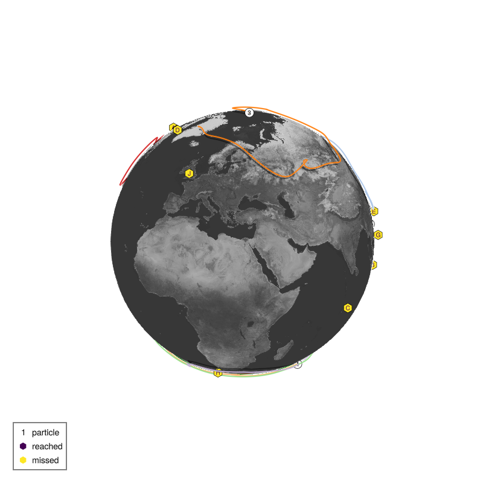
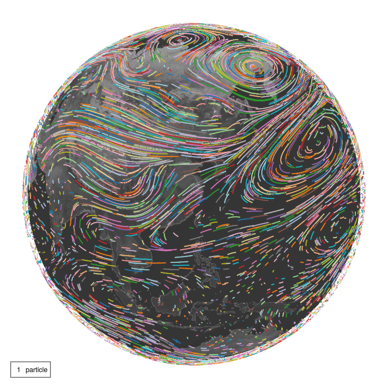

Particle advection
There are several steps for particle advection in SpeedyWeather. Particle advection in general is described in more detail in
Generally we do,
using TravellingSailorProblem, SpeedyWeather
# how many particles do you want when creating a spectral grid
spectral_grid = SpectralGrid(nparticles=10)
# create a particle advection component, choose the layer it's on
particle_advection = ParticleAdvection2D(spectral_grid, layer=8)
# pass the particle advection to the model constructor
model = PrimitiveWetModel(spectral_grid; particle_advection)
# define particle tracker and add to the model
particle_tracker = ParticleTracker(spectral_grid)
add!(model, :particle_tracker => particle_tracker)which is now explained in more detail
nparticles
In SpeedyWeather, creating a spectral_grid means to choose the resolution so that every component knows of which size to allocate variables etc. Hence you have to decide here how many particles you want by passing on the nparticles keyword argument. The number of particles is then displayed
SpectralGrid(nparticles=100)SpectralGrid{Spectrum{...}, OctahedralGaussianGrid{...}}
├ Number format: Float32
├ Spectral: T31 LowerTriangularMatrix
├ Grid: 48-ring OctahedralGaussianGrid, 3168 grid points
├ Resolution: 3.61°, 401km (at 6371km radius)
├ Particles: 100
├ Vertical: 8-layer atmosphere, 2-layer land
└ Architecture: CPU using ArrayParticleAdvection2D
By default, SpeedyWeather does not advect any particles. So you have to create a ParticleAdvection2D component (there is no 3D, yet, sorry!) and the spectral_grid has to be passed on as the first argument so the particle advection knows how many particles to advect!
ParticleAdvection2D(spectral_grid, layer=8)ParticleAdvection2D{Float32} <: SpeedyWeather.AbstractParticleAdvection
├ every_n_timesteps::Int64 = 6
├ layer::Int64 = 8
└ Δt::Base.RefValue{Float32} = Base.RefValue{Float32}(0.0f0)As the advection is in 2D, on a given layer of a SpeedyWeather simulation (so don't choose it higher than nlayers in spectral_grid!) you can choose the layer here too. Layers are numbered 1 at the top of the atmosphere to nlayers near the surface. There are other options but we won't change those.
Model constructor
In SpeedyWeather, PrimitiveWetModel is the model that solves the primitive equations (widely used for weather forecasting) with humidity. It takes the spectral_grid as the first argument and then keyword arguments for every non-default model component. If you look at model it's quite lenghty as it shows every single model component, from numerics, to output to parameterizations that are used inside a simulation. But now model.particle_advection is just the particle advection we just created, it also lives inside the model now!
model = PrimitiveWetModel(spectral_grid; particle_advection)
model.particle_advectionParticleAdvection2D{Float32} <: SpeedyWeather.AbstractParticleAdvection
├ every_n_timesteps::Int64 = 6
├ layer::Int64 = 8
└ Δt::Base.RefValue{Float32} = Base.RefValue{Float32}(0.0f0)Particle tracker
So far the particles would fly but their trajectory wouldn't be tracked. For that we create a particle tracker as follows, again passing on spectral_grid as the first argument
particle_tracker = ParticleTracker(spectral_grid)ParticleTracker{Float32} <: AbstractCallback
├ schedule::Schedule = Schedule <: SpeedyWeather.AbstractSchedule
├ every::Second = 14400 seconds
├ steps::Int64 = 0
├ counter::Int64 = 0
└── arrays: times, schedule
├ filename::String = particles.nc
├ path::String =
├ compression_level::Int64 = 1
├ shuffle::Bool = false
├ keepbits::Int64 = 15
├ nparticles::Int64 = 10
├ netcdf_file::Nothing = nothing
└── arrays: lon, lat, σThere's many options but we won't touch those or elaborate them here. Important is however that creating a particle tracker doesn't mean it's part of the model. For this we do
add!(model, :particle_tracker => particle_tracker)As the ParticleTracker is implemented as a callback you can provide a key (a name) for it, like here :particle_tracker but you could also give it your own key like :my_tracker or simply do
add!(model, particle_tracker)in which case a random key is chosen as printed with an [ Info: note. But beware now we have added the same particle_tracker twice but with two different keys in which case the same particle_tracker will be called twice on every time step – probably not a good idea. You can always check which callbacks you have added with
model.callbacksDict{Symbol, SpeedyWeather.AbstractCallback} with 2 entries:
:callback_pS5X => ParticleTracker{Float32} <: AbstractCallback…
:particle_tracker => ParticleTracker{Float32} <: AbstractCallback…and delete callbacks with delete!(model.callbacks, :key). We delete one particle tracker by specifying its key, so that only the other one remains
delete!(model.callbacks, :particle_tracker)Dict{Symbol, SpeedyWeather.AbstractCallback} with 1 entry:
:callback_pS5X => ParticleTracker{Float32} <: AbstractCallback…Note that also the children are implemented as callbacks so you will likely see a list of both Destinations (the children) and the particle tracker!
Otherwise the second will interfere with the netCDF file created by the first.
Initial conditions
When the model is initialized it returns a simulation which contains that model as well as variables among which are the particles. We can therefore view those particles by
simulation = initialize!(model)
(; particles) = simulation.prognostic_variables
particles10-element Vector{Particle{Float32}}:
Particle{Float32}( active, 240.83˚E, 27.72˚N, σ = 0.43)
Particle{Float32}( active, 248.81˚E, -56.97˚N, σ = 0.15)
Particle{Float32}( active, 83.85˚E, 25.45˚N, σ = 0.71)
Particle{Float32}( active, 317.57˚E, 75.71˚N, σ = 0.46)
Particle{Float32}( active, 37.32˚E, -72.26˚N, σ = 0.11)
Particle{Float32}( active, 16.95˚E, 44.46˚N, σ = 0.18)
Particle{Float32}( active, 259.22˚E, 69.29˚N, σ = 0.54)
Particle{Float32}( active, 170.08˚E, 15.09˚N, σ = 0.99)
Particle{Float32}( active, 0.83˚E, 19.88˚N, σ = 0.12)
Particle{Float32}( active, 324.52˚E, 32.84˚N, σ = 0.46)which is a Vector{Particle{T}} of some number format T. By default these particle initial conditions are uniformly random across the globe but you can manually choose the initial conditions with
particles[1] = Particle(-30, 50) # lon, lat in degreesParticle{Float32}( active, -30.00˚E, 50.00˚N, σ = 0.00)You can use both (0, 360˚E) or (-180, 180˚E). Or create a random particle
particles[2] = rand(Particle)Particle{Float32}( active, 325.02˚E, 62.91˚N, σ = 0.77)Or a mix of both
particles[3] = Particle(-30, 50 + 5*randn())Particle{Float64}( active, -30.00˚E, 46.55˚N, σ = 0.00)Particle seeds
rand(Particle) creates a random particle uniformly distributed over the globe (not packed towards the poles ...). While this is random, it's not directly reproducible. For that one can use a specific random number generator with a predefined seed, e.g. the Xoshiro random number generator
using Random, SpeedyWeather
seed = 123
RNG = Xoshiro(seed)
rand(RNG, Particle)Particle{Float32}( active, 187.64˚E, 10.00˚N, σ = 0.89)places a particle in a location that is different from the next particle (following a random sequence)
rand(RNG, Particle)Particle{Float32}( active, 68.73˚E, 2.94˚N, σ = 0.39)but one can always revert to an earlier (or later) point in the sequence by reseeding the random number generator
Random.seed!(RNG, seed)
rand(RNG, Particle)Particle{Float32}( active, 187.64˚E, 10.00˚N, σ = 0.89)Visualising trajectories
Now let us also add some children as destinations
children = TravellingSailorProblem.children(10)
add!(model, children)which automatically uses their respective names as keys, you can check this with
model.callbacksDict{Symbol, SpeedyWeather.AbstractCallback} with 11 entries:
:Elif => Destination{Float32} <: AbstractCallback…
:Felipe => Destination{Float32} <: AbstractCallback…
:Haruko => Destination{Float32} <: AbstractCallback…
:Ana => Destination{Float32} <: AbstractCallback…
:Diego => Destination{Float32} <: AbstractCallback…
:Isla => Destination{Float32} <: AbstractCallback…
:Gael => Destination{Float32} <: AbstractCallback…
:callback_pS5X => ParticleTracker{Float32} <: AbstractCallback…
:Carla => Destination{Float32} <: AbstractCallback…
:Jose => Destination{Float32} <: AbstractCallback…
:Babu => Destination{Float32} <: AbstractCallback…Now we still need to initialize the model to obtain a simulation and run it!
simulation = initialize!(model)
run!(simulation, period=Day(40))[ Info: ParticleTracker writes to particles.nc as output=falseAfter this is complete we can investigate the particle trajectories with globe passing on the particle tracker used and the children that were added to the model
using GLMakie, GeoMakie
globe(particle_tracker, children)
Performance tips
You can probably advect thousands to millions of particles without problems, but visualising many many particles can get tricky. Here are several arguments to globe you can provide to speed things up
shadows=falsetrack_labels=false(automatically for 100 or more particles)- or don't pass on the
childrenas destinations, only theparticle_tracker
It is probably also wise to only visualise shorts tracks even though many, i.e. simulate particle tracks for a few days only, not weeks. Visualising 1000 particles advected for 1 day will give you a good overview of how the wind is blowing. But note that the initial conditions are unlikely representative for the remaining 41 days of a simulation. So maybe you want to run!(simulation, period=Week(1)) before adding the particle tracker (or the children)!
Many particles
Applying the ideas from Performance tips you could for example do
using SpeedyWeather, TravellingSailorProblem, GLMakie
# create a simulation with 10 particles and particle advection
spectral_grid = SpectralGrid(trunc=31, nlayers=8, nparticles=10_000)
particle_advection = ParticleAdvection2D(spectral_grid, layer=8)
model = PrimitiveWetModel(spectral_grid; particle_advection)
simulation = initialize!(model, time=DateTime(2025, 11, 14))
run!(simulation, period=Week(2)) # run for two weeks without tracking
# reset to random particle locations
(; particles) = simulation.prognostic_variables
for i in eachindex(particles)
particles[i] = rand(Particle)
end
# add particle tracker
particle_tracker = ParticleTracker(spectral_grid)
add!(model, :particle_tracker => particle_tracker)
# now run for a day
run!(simulation, period=Day(1))
# visualise
globe(particle_tracker, perspective=(120, 30), shadows=false)[ Info: ParticleTracker writes to particles.nc as output=false
But note that this is likely too slow to be interactive unfortunately.